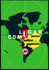

Turbulence Panel at Historical Materialism Conference, 11-14 Nov. London
 In cooperation with the Rosa Luxemburg Foundation, we’re organising a panel at this year’s Historical Materialism conference in London (11-14 November). The panel’s title is ‘Beyond What Is and Isn’t To Be Done: The Question of Organisation Today’. Speakers are: Frieder Otto Wolf, Peter Thomas, and Ben Trott (Turbulence). Tadzio Mueller (Turbulence) will be chairing the panel.
In cooperation with the Rosa Luxemburg Foundation, we’re organising a panel at this year’s Historical Materialism conference in London (11-14 November). The panel’s title is ‘Beyond What Is and Isn’t To Be Done: The Question of Organisation Today’. Speakers are: Frieder Otto Wolf, Peter Thomas, and Ben Trott (Turbulence). Tadzio Mueller (Turbulence) will be chairing the panel.
The provisional date and time for the panel is Friday 12 November, 4.15pm-6pm. The provisional programme can be found online here. We will keep you up to date with any changes here.
The conference will take place at the School of Oriental and African Studies (SOAS) and Univeristy of London Union (ULU), Russell Square, London. Nearest tube: Russell Square.
Conference registration details.

Turkish Translation of ‘Life in Limbo?’ Now Online
The Turkish translation of our Issue 5 article, Life in Limbo?, published in the journal Birikim (Issue 255), can now be downloaded here.
Berlin Tagesseminar: (Post-)Operaismus – Bezugspunkt für Soziale Bewegungen?
Mit: Ben Trott (Turbulence) und Anna Franziska Stiede
Das Seminar gibt eine Einführung in die theoretischen Grundlagen des (Post-) Operaismus und wirft zugleich einen Blick auf aktuelle soziale Kämpfe in Italien. Vom Auftauchen des Operaismus in Zeitschriften wie Classe Operaia und in den Tumulten der 1960er und 70er Jahre hinzu den neueren Theorien von Hardt, Negri und Virno und den Kämpfen Sozialer Bewegungen in Italien heute: Inwieweit ist der (Post-) Operaismus noch Bezugspunkt für gesellschaftliche Auseinandersetzungen?
Eine Veranstaltung des Bildungswerks Berlin der Heinrich-Böll-Stiftung.
Diese Veranstaltung wird realisiert aus Mitteln der Stiftung Deutsche Klassenlotterie Berlin.
Teilnahme frei. Anmeldung erwünscht, aber nicht unbedingt nötig unter: global@bildungswerk-boell.de
Veranstaltungsort: Werkstatt der Kulturen, Wissmannstraße 32, 12047 Berlin (Nähe U-Bahnhof Hermannplatz)
Termin: Sa, 30.10.10, 11-18Uhr
Lageplan hier.
Mehr infos: http://www.bildungswerk-boell.de/calendar/VA-viewevt.aspx?evtid=8398&returnurl=/index.html
{kind=link}
Portuguese Translation of ‘Life in Limbo?’
The Portuguese translation of our article, ‘Life in Limbo?‘, from Issue 5 of Turbulence, has now been published by the Brazilian journal, Lugar Comum (Issue 30). We’ll be making the translation available online here soon, so watch this space. In the meantime, copies of Lugar Comum can be ordered here. Follow this link direct to Issue 30.
{kind=link}
Further translations can be found here.
UPDATE: The Portuguese translation of this article is now available online here.
Video from 48 hour ‘Communal Life Seminar’ at the ICA
In September 2010, Turbulence participated in a 48 hour “communal life seminar” at the Institute of Contemporary Arts (ICA) in London. The event was organised by Chto Delat? and culminated in a Brechtian “learning play” [Lehrstueck] titled ‘What Struggles Do We Have in Common?‘ The seminar and play formed part of a series of events surrounding Chto Delat?’s ‘The Urgent Need to Struggle‘ exhibition which is itself part of a season of events at the ICA taking place under the title of ‘Dissent‘, addressing questions of art, activism and social change. Reviews of the exhibition can be found here, here, and here.
A following film has now been released, documenting the seminar.
ICA-48hrs-conference-what struggle do we have in common? from EHSAN Critique on Vimeo.
For more information, see earlier posts to our News Blog here and here.
Turbulence to be listed in Alternative Press Index
We’re pleased to announce that Turbulence is now to be listed in the Alternative Press Index. The following is taken from the Alternative Press Center‘s website:
The Alternative Press Index is a biannual subject index to over 300 alternative, radical and left periodicals, newspapers and magazines. Librarians consider the API to be the most comprehensive and up-to-date guide to alternative sources of information available today. Each article is listed and cross-referenced by subject. Every citation contains the title, author and information about the publication in which it is located…
The Alternative Press Index (API) was born with the New Left of the 1960’s. It was launched in 1969 to provide access to the practices and theories of radical social change. The Index is international and interdisciplinary, spanning the social sciences and humanities, with its central focus on the practice and theory of socialism, national liberation, labor, indigenous peoples, gays/lesbians, feminism, ecology, democracy, and anarchism. It strives to be as comprehensive as possible…
The Alternative Press Index is published biannually in April and October. Each issue is approximately 750 pages in length. Each issue contains complete subscription information for the publications indexed, as well as a selection of abstracts from 50 research journals.
The Alternative Press Center’s online directory can be found here. The Alternative Press Index is also available via EBSCO Publishing and online research database here. Request that your library subscribe to the Index.
UPDATE: Our API entry can now be found online here.
Statement: ‘Democracy Not Integration’
Two Turbulence editors, Tadzio Mueller and Ben Trott, are among the 415 initial signatories of a statement published today by the Netzwerks Kritische Migrations- und Grenzregimeforschung entitled ‘Democracy Not Integration‘.
We are publishing the statement in full below, complete with a list of the initial signatories. You can add your name to the statement here. It was published on the front page of today’s taz newspaper, a German daily. An English translation of the text can be found here.
A Twitter feed with information about the statement and responses is here. The hashtag #dsi (an abbreviation of Demokratie statt Integration/Democracy Not Integration) is being used. A Facebook page has been set up here.
Demokratie statt Integration
Die Bundesbank ist Thilo Sarrazin los. Damit ist die Geschichte aber längst nicht vorbei. Denn beunruhigend sind nicht allein die populistischen Thesen dieses Bankiers, beunruhigend ist vielmehr die Plausibilität, die seinen Ausführungen zugestanden wird. Eine erstaunliche Anzahl von PolitikerInnen, WissenschaftlerInnen und MeinungsmacherInnen sind sich einig: Der Sarrazin’sche Biologismus hat zwar in Deutschland einen besonderen Hautgout, im Kern aber habe der Mann doch Recht. Nicht wenige feiern den ehemaligen Finanzsenator Berlins als Tabubrecher mit visionärem Blick für Deutschlands Zukunft. Wir fragen: welches Tabu? Die Skandalisierung der Migration gehört zum Standardrepertoire in Deutschland. Es ist sinnlos, den infamen Behauptungen von Sarrazin et al. wissenschaftliche Fakten entgegenstellen zu wollen, um zu beweisen, was MigrantInnen „wirklich“ tun oder lassen.
Man kann diese Debatte nicht versachlichen, denn nichts an ihr ist richtig. Wir akzeptieren schlicht keine Haltung, die gesellschaftliche Verhältnisse nach Kosten-Nutzen-Erwägungen durchrechnet und Arme und MigrantInnen zur Ausschusspopulation erklärt. Dies geschieht im Kontext einer globalen Wirtschaftskrise, von der nur allzu klar ist, wer ihre Folgen tragen soll.
Wir wollen das Offensichtliche klar stellen. Wir leben in einer Einwanderungsgesellschaft. Das bedeutet: Wenn wir über die Verhältnisse und das Zusammenleben in dieser Gesellschaft sprechen wollen, dann müssen wir aufhören, von Integration zu reden. Integration heißt, dass man Menschen, die in diesem Land arbeiten, Kinder bekommen, alt werden und sterben, einen Verhaltenskodex aufnötigt, bevor sie gleichberechtigt dazugehören. Aber Demokratie ist kein Golfclub. Demokratie heißt, dass alle Menschen das Recht haben, für sich und gemeinsam zu befinden, wie sie miteinander leben wollen. Die Rede von der Integration ist eine Feindin der Demokratie.
Noch vor kurzem wurden MigrantInnen der besonderen Missachtung von Frauenrechten bezichtigt. Die aktuelle Hysterie zeigt aber einmal mehr, dass es den KritikerInnen der Migration nicht um Gleichberechtigung geht: Hier wird über Frauen nur noch als Gebärende gesprochen, die entweder zu viel oder zu wenig Nachwuchs produzieren. Es muss darum gehen, rechtliche und politische Strukturen zu schaffen, die es MigrantInnen ermöglichen, selbstbestimmt ihr Leben zu gestalten – und das beinhaltet auch, das Ausländerrecht zu verändern.
Wenn selbsternannte LeistungsträgerInnen sich ein quasi „naturgegebenes“ Recht zubilligen, über die Daseinsberechtigung anderer zu urteilen, dann ist das wohl ein neuer Mix aus Neoliberalismus und Rassismus. Bisher wurden Sprache, Kultur und religiöse Gebräuche der migrantischen Minderheiten für deren Lebensverhältnisse verantwortlich gemacht. Jetzt sollen es die Gene sein. Bisher wurde behauptet, dass durch Leistung, Arbeitsethos und Anpassung ein Platz in der Gesellschaft gesichert ist. Jetzt wird ganzen Gruppen nicht nur die Möglichkeit, sondern auch die Fähigkeit dazu abgesprochen. Inakzeptabel ist nicht nur der Rassismus, der in den Ausführungen von Sarrazin und seinen Mitläufern steckt, sondern auch die darin enthaltene Konsequenz, Hierarchien in dieser Gesellschaft als unverrückbar zu erklären und damit Politik an sich, die Konflikte, Verhandlungen und Kämpfe um ein besseres Leben für sinnlos zu erklären.
Es sind politische Entscheidungen, die für die Verarmung und soziale Deklassierung zunehmender Teile der Bevölkerung verantwortlich sind. Reden wir davon, wie dieses Deutschland jahrzehntelang den Eingewanderten ihre sozialen und politischen Rechte vorenthalten hat. Reden wir davon, dass MigrantInnen der Zugang zu Bildung, Wohnraum und Arbeitsplätzen, in öffentliche Institutionen und Ämter ebenso wie in Clubs und Fußballvereine systematisch erschwert wird. Das Problem sind weder die Armen noch die MigrantInnen, das Problem ist eine Politik, die Armut und Rassismus produziert. Das Problem ist eine Gesellschaft, die sich auch über Ausgrenzung definiert.
Unübersehbar ist, wie viele Sarrazin eilig beispringen und nach dem Recht auf Meinungsfreiheit rufen, ganz so, als ob er ein Problem hätte, seine Thesen öffentlich zu machen. Die Kritik an ihm wird zum Angriff auf die Freiheit des Wortes stilisiert. Der Aggressor wird so zum Opfer, auch das ist leider eine sehr gewöhnliche Inszenierung. Wer Sarrazins bevölkerungspolitische Ansichten übernimmt, arbeitet mit an der Spaltung unserer Gesellschaft.
Denn: Wenn Integration irgendetwas bedeuten kann, dann doch nur, dass alle drin stecken!
ErstunterzeichnerInnen
- Allmende e.V. Haus alternativer Migrationspolitik, Berlin
- Prof. i.R. Dr. Elmar Altvater. Otto-Suhr-Institut für Politikwissenschaft, Freie Universität Berlin
- Katrin Amelang. Kulturanthropologin
- Prof. Dr. Iman Attia. Alice Salomon Hochschule, Berlin
- Dr. Roland Atzmüller. Forschungs- und Beratungsstelle Arbeitswelt, Wien
- Evrim Baba-Sommer. MdA, Berlin
- Eva Bahl. Ethnologin & Referentin der Politischen Bildungsarbeit, München
- Mihai Balan. Organisationssekretär, Europäischer Verband der Wanderarbeiter
- Garip Bali. Dozent, Allmende e.V.
- Frauke Banse. Politikwissenschaftlerin, Kassel
- Dr. Ellen Bareis. Fachhochschule Ludwigshafen/Goethe-Universität Frankfurt
- Petra Barz. dock europe, Hamburg
- Dr. Peter Bathke. Jenny Marx Gesellschaft, Trier
- Silvana Battisti. Musikerin (Woog Riots)
- Dorothee Baumann. Lektorenprogramm der Robert-Bosch-Stiftung / Univerzitet “Džemal Bijedi?” in Mostar
- Christian Beck. Physiker, München
- PD Dr. Johannes M. Becker. VS des Arbeitskreises Marburger WissenschaftlerInnen für Friedens- und Abrüstungsforschung (AMW)
- Prof. Dr. Jörg Becker. Politikwissenschaftler, Solingen
- Susanne Becker. Soziologin und Dozentin am Institut für Soziologie der LMU München.
- Jochen Becker. metroZones, Center für Urban Affairs
- Roger Behrens. Autor, Dozent, Hamburg
- Prof. Dr. Bernd Belina. Institut für Humangeographie, Goethe-Universität Frankfurt
- Martina Benz. Politikwissenschaftlerin, John-F.-Kennedy-Institut für Nordamerikastudien, FU Berlin
- Olaf Berg. Historiker, Medienpädagogik Zentrum Hamburg e.V., Hamburg
- Tanja Berger. Vorstand Deutsch-polnischer Förderverein Mikuszewo e.V.
- Sven Bergmann. Kulturanthropologe, Berlin
- Meike Bergmann. dock europe, Hamburg
- Jonas Berhe. Vorstand ISD – Bund e.V.
- Björn Bicker. Autor und Dramaturg
- Prof. Dr. Hans-Jürgen Bieling. Politikwissenschaftler, Hochschule Bremen
- Maxim Biller. Autor, Berlin
- Prof. Dr. Beate Binder. Institut für Europäische Ethnologie und Zentrum Transdisziplinäre Geschlechterstudien, Humboldt-Universität Berlin
- Dr. Peter Birke. Historiker, Fachbereich Sozialökonomie, Universität Hamburg
- Nadine Blumer. Promovendin, Toronto, Kanada
- Dr. Manuela Boatcã. Lateinamerika-Institut, Freie Universität Berlin
- Edgar Boczek. Diplom Biochemiker, TU München
- Katrin de Boer. Politikwissenschaftlerin, Europa Universität Viadrina
- Dr. Manuela Bojadzijev. Institut für Europäische Ethnologie, Humboldt Universität zu Berlin
- Prof. Dr.Thorsten Bonacker. Professor für Friedens- und Konfliktforschung an die Philipps-Universität Marburg, Vorstand der Arbeitsgemeinschaft für Friedens- und Konfliktforschung
- Tan?l Bora. Lektor und Autor, Ankara (Türkei)
- Prof. Dr. Dieter Boris. Universität Marburg
- Friedrich von Bose. Institut für Europäische Ethnologie, Humboldt Universität zu Berlin
- Anna Böcker. Politikwissenschaftlerin, Universität Wien
- Thomas Böwing. Hamburg
- Prof. Dr. Ulrich Brand. Wien, Universität Wien
- Katherine Braun. Soziologin, Universität Hamburg
- Prof. Dr. Kathrin Braun. Institut für Politische Wissenschaft, Leibniz-Universität Hannover
- Dr. Roman Brinzanik. Bioinformatiker und Autor, Max-Planck-Institut für molekulare Genetik, Berlin
- Prof. Dr. Sabine Broeck. Institut für postkoloniale und transkulturelle Studien (INPUTS), Universität Bremen
- Prof. Dr. Ulrich Bröckling. Institut für Soziologie, Martin-Luther-Universität Halle-Wittenberg
- Dr. Claudia Brunner. Zentrum für Friedensforschung und Friedenspädagogik, Alpen-Adria-Universität Klagenfurt
- Franziska Brückner. Berlin, Netzwerk MiRA
- Prof.in Dr.in Sabeth Buchmann. Institut für Kunst- und Kulturwissenschaften, Akademie der bildenden Künste Wien
- Elena Buck. Politikwissenschaftlerin, Engagierte Wissenschaft e.V., Leipzig
- Simone Buckel. Georg-Simmel Zentrum für Metropolenforschung, HU Berlin
- Dr. Sonja Buckel. Sozialwissenschaftlerin und Juristin, Institut für Sozialforschung Frankfurt am Main
- Prof. Dr. Wolf-Dietrich Bukow. Universität zu Köln
- Hazal Nathalie Budak. Soziologie-Studentin, Hamburg
- Dr. Gabriel Caballeros. Soziologe, Berlin
- Dr. Gülay Caglar. Politikwissenschaftlerin, Humboldt-Universität zu Berlin
- Murat Cakir. Geschäftsführer der RLS-Hessen, Frankfurt/M
- Neco Celik. Film u. Theaterregisseur, Berlin
- Prof. Dr. Robin Celikates. Institut für Philosophie, Universität Amsterdam
- Baris Ceyhan. Soziologin, Journalistin, Luxemburg
- Silvy Chakkalakal. Institut für Europäische Ethnologie, Humboldt Universität zu Berlin
- Bindu Chakraborty. Soziologin
- Michaela Christ. Kulturwissenschaftliches Institut Essen
- Tsafrir Cohen. Repräsentant von medico international in Palästina und Israel, Ramallah/Jerusalem/Berlin
- Fatima Oliva Conesa. Künstlerin, Berlin/Algeciras
- Alice Creischer. Künstlerin, Berlin
- Dr. Paolo Cuttitta. Soziologe, Universität Palermo
- Ahmet Çelik. Vorsitzender von YEK-KOM (Förderation der kurdischen Vereine in Deutschland), Düsseldorf
- Sevim Dagdelen. Mitglied der Fraktion die LINKE im Bundestag, Sprecherin für Migrations- und Integrationspolitik und Internationale Beziehungen, Mitglied im Auswärtigen Ausschuss und stv. Mitglied im Innenausschuss
- Franziska Dahlmeier. Soziologie-Studentin, Hamburg
- Isabel Dean. Promovendin am Institut für Europäische Ethnologie, Universität Wien
- Katharina Debus. Dipl.-Politologin, Dissens e.V., Wissenschaftlerin und Fortbildnerin zu Bildungsgerechtigkeit und Geschlechterverhältnissen
- Necile Deliceoglu. Pädagogin, Berlin
- Tahir Della. Vorstand „Initiative Schwarze Menschen in Deutschland“ ISD-Bund e.V
- Prof. Dr. Alex Demirovic. Technische Universität Berlin
- Deuser, Patricia. Promovendin, Institut für Politikwissenschaft, Universität Leipzig
- Philipp Dickel. medibüro Hamburg
- Prof. Diedrich Diederichsen. Akademie der bildenden Künste, Wien
- Sarah Diehl. Autorin und Filmemacherin, Berlin
- Dr. des. Kristina Dietz. Lateinamerika-Institut, Freie Universität Berlin
- David Dilmaghani. Philosoph, Goethe-Universität Frankfurt
- Dagmar Diesner. Filmemacherin, London
- Emma Dowling. Lecturer, Queen Mary, University of London
- Katja Dörner. Vorstand Institut Solidarische Moderne (ISM), Die Grünen MdB, Bonn
- Prof. Dr. Klaus Dörre. Friedrich-Schiller-Universität Jena
- Dr. Heike Drotbohm. Institut für Völkerkunde, Universität Freiburg
- Dr. Stephan Dünnwald. Centro de Estudos Africanos, ISCTE-IUL, Lissabon
- Dr. Silke van Dyk. Institut für Soziologie, Friedrich Schiller Universität Jena
- Moritz Ege. Kulturwissenschaftler, Berlin
- Dr. Petra Eggers. Literaturagentin
- Kornelia Ehrlich. Wissenschaftliche Mitarbeiterin, Leipzig
- Dirk Eilers. Theaterpädagoge/Bildungsreferent, Berlin
- Nina Elsemann. Historikerin, Freie Universität Berlin
- Diana Engel. Journalistin, Berlin
- Jennifer Engler. Studentin, Humboldt Universität zu Berlin
- Fabian Engler. Student, Frankfurt/Main
- Dr. Esra Erdem. Sozialwissenschaftlerin
- Dr. Christiane Falge. Institut für Interkulturelle und Internationale Studien, Universität Bremen
- Matthias Faltz. Intendant des hessischen Landestheaters Marburg
- Alexa Färber. Prof. für Stadtanthropologie/-ethnographie, HafenCity, Universität Hamburg
- Prof. Dr. Gisela Febel. Institut für postkoloniale und transkulturelle Studien (INPUTS), Universität Bremen
- Sandra Fernau. Studentin
- Prof. Dr. Andreas Fischer-Lescano. Zentrum für Europäische Rechtspolitik der Universität Bremen
- Forschungsgruppe [KriMi] Kritische Migrationsforschung. Wien
- Priv. Doz. Dr. Heidrun Friese. Sozialanthropologin, Bochum und Berlin
- Dr. Georg Fülberth. em. Professor für wissenschaftliche Politik an der Universität Marburg, Publizist und Fraktionschef der Marburger Linken
- PD Dr. Martha Zapata Galindo. Lateinamerika-Institut, Freie Universität Berlin
- Fabian Georgi. Politikwissenschaftler. Institut für Sozialforschung, Frankfurt am Main
- Gladt. Gays und Lesbians aus der Türkei e.V., Berlin
- Martin Glasenapp. medico international, Frankfurt/Main
- Dr. Urmila Goel. Kultur- und Sozialanthropologin, Berlin
- Karina Goldberg. Kulturanthropologin
- Norbert Göbelsmann. Frankfurt am Main
- Prof. Dr. Irene Götz. Institut für Volkskunde/Europäische Ethnologie, München
- Eric Van Grasdorff. Vorsitzender AfricAvenir International e.V.
- Isabelle Graw. Herausgeberin von „Texte zur Kunst“
- Dr. Stefanie Graefe. Institut für Soziologie, Friedrich Schiller Universität Jena
- Gudrun Greve. AK Undokumentierte Arbeit/Ver.di, Berlin
- Christoph Gurk. Kurator, Autor, Berlin
- Dr. Encarnación Gutiérrez Rodríguez. Sozialwissenschaftlerin, Senior Lecturer in Transcultural Studies, School of Languages, Linguistics and Cultures University of Manchester
- Duygu Gürsel. Soziologin, Berlin
- Dr. Kien Nghi Ha. Sozialwissenschaftler und Migrationsforscher, Berlin
- Ulrike Hamann. Kulturwissenschaftlerin M.A., AK Undokumentierte Arbeit bei Ver.di, Berlin
- Juliane Hammermeister. Pädagogische Mitarbeiterin, Goethe-Universität Frankfurt
- Minu Haschemi Yekani. Historikerin, European University Institute, Florenz
- Prof. Dr. Brigitte Hasenjürgen. Katholische Hochschule NRW, Münster
- Prof. Dr. Frigga Haug. Hamburg
- Dr. Marcus Hawel. Soziologe, Rosa Luxemburg Stiftung, Berlin
- Evelyn Hayn. Zentrum für transdisziplinäre Geschlechterstudien, HU Berlin, AK Feministische* Sprachpraxis
- Kathleen Heft. Kulturwissenschaftlerin, Humboldt Universität zu Berlin
- Jens Heibach. Centrum für Nah- und Mittelost-Studien, Philipps-Universität Marburg
- Nanna Heidenreich. Kulturwissenschaftlerin/Kuratorin, Berlin
- Prof. Dr. Hermann Heidrich. Forschungsstelle Lebensgeschichtliches Archiv, Christian-Albrechts-Universität, Kiel
- Merle Heinrich. Studentin
- Bernadette La Hengst. Musikerin und Regisseurin, Berlin
- Prof. Dr. Annette Henninger. Professorin für Politik und Geschlechterverhältnisse an der Universität Marburg
- Maria Rojas Hernández. Bildungsreferentin, Berlin
- Maria Teresa Herrera Vivar. Soziologin, Goethe-Universität Frankfurt
- Dr. Svea Herrmann. Institut für Politische Wissenschaft, Leibniz-Universität Hannover
- Dr. Sabine Hess. Kulturanthropologin, Institut für Volkskunde/Europäische Ethnologie, München
- Farida Heuck-Yoo. Bildende Künstlerin, Berlin
- Christian Hinrichs. Schauspieler
- Prof. Dr. Tom Holert. Kunsthistoriker, Akademie der bildenden Künste Wien
- Cornelis Horlacher. Sozialpädagoge, Frankfurt/M
- Prof. Dr. Lann Hornscheidt. Zentrum für transdisziplinäre Geschlechterstudien, HU Berlin, AK Feministische* Sprachpraxis
- Miriam Höppner. Sozialwissenschaftlerin, Berlin, Netzwerk MiRA
- Kirsten Huckenbeck. Redaktion Express, ver.di-Teamerin, MigrAr Frankfurt a.M.
- Dr. Anne Huffschmid. Kulturwissenschaftlerin und Autorin, Lateinamerika-Institut, Freie Universität Berlin
- Nikolai Huke. Politikwissenschaftler, Universität Marburg
- Tobias Hülswitt. Autor und DaZ-Lehrer in Berlin-Kreuzberg
- Dr. Stefanie Hürtgen. Sozialwissenschaftlerin, Institut für Sozialforschung, Frankfurt am Main
- Bernd Hüttner. Politikwissenschaftler, Mitarbeiter der Rosa-Luxemburg-Stiftung, Bremen
- Aida Ibrahim. Welcome to Europe Netzwerk
- Prof. Dr. Rahel Jaeggi. Humboldt-Universität zu Berlin
- Jana Janicki. Hamburg
- Dr. Margarete Jäger. Duisburger Institut für Sprach- und Sozialforschung
- Prof Dr. Siegfried Jäger. Duisburger Institut für Sprach- und Sozialforschung
- Ulla Jelpke. MdB, innenpolitische Sprecherin der Fraktion DIE LINKE im Bundestag
- Frank John. Kommunistischer Buchhalter und Genossenschaftsvorstand Alternativen Elbufer, Hamburg
- Anne Jung. Medico International
- Pascal Jurt. Akademie der Bildenden Künste, Wien
- Dr. des. Ute Kalender. Södertörn University Stockholm
- Dr. Radostin Kaloianov. Sozialforscher, Wien
- Sandy Kaltenborn. image-shift.net, Berlin
- Schorsch Kamerun. Sänger der Goldenen Zitronen, Musiker, Autor und Regisseur, Hamburg
- Kampagne „Integration – Nein Danke!“. Berlin
- Prof. Dr. Juliane Karakayali. Evangelische Hochschule Berlin
- Dr. Serhat Karakayali. Institut für Soziologie, Martin-Luther-Universität Halle-Wittenberg
- Kadriye Karci. Mitglied der Fraktion die LINKE im Abgeordnetenhaus von Berlin
- Johanna Karpenstein. Berlin, Netzwerk MiRA
- Prof. Dr. Wolfgang Kaschuba. Institut für Europäische Ethnologie, Humboldt Universität zu Berlin
- Bernd Kasparek. Mathematiker, Kulturanthropologe, München
- Maria Kechaja. Studentin der empirischen Kulturwissenschaft, Universität Tübingen
- Jay Janet Keim. Zentrum für transdisziplinäre Geschlechterstudien, Humboldt-Universität zu Berlin, AK Feministische* SprachPraxis
- Dr. Anika Keinz. Europa Universität Viadrina Frankfurt/Oder
- Andreas Kemper. Herausgeber von „The Dishwasher. Magazin für studierende Arbeiterkinder“, Münster
- Thomas Kemper. Sozialwissenschaftler, Frankfurt am Main
- Prof. Dr. Ina Kerner. Humboldt-Universität zu Berlin
- Romin Khan. Gewerkschaftssekretär, ver.di Bundesverwaltung Berlin
- Sami Khatib. Freie Universität Berlin
- Olivia Kilias. Institut für Sozialanthropologie, Universität Bern
- Katja Kipping. Stellvertretende Parteivorsitzende DIE LINKE. MdB, Dresden
- Heike Kleffner. Journalistin, Berlin
- Jörg H. Klement. Diplomsoziologe, Bad Homburg
- Silja Klepp. Ethnologin, Universität Bremen
- Prof. Dr. Michael Klundt. Hochschule Magdeburg-Stendal
- Andrea Knaut. Diplom-Informatikerin, Institut für Informatik, Humboldt-Uni Berlin
- Dr. Michi Knecht. Ethnologin, Inst. f. Europ. Ethnologie /SFB 640, Humboldt-Universität zu Berlin
- Hagen Kopp. Lagerarbeiter, kein mensch ist illegal Hanau
- Onur Suzan Kömürcü-Nobrega. Department of Media and Communications, Goldsmiths, University of London
- Ruth Krause. Kulturanthropologin
- Kristine Krause. Humboldt Universität zu Berlin
- Prof. Mag. Christian Kravagna. Postcolonial Studies, Akademie der bildenden Künste Wien
- Andrea Kretschmann. Soziologin, Universität Bielefeld & Institut für Rechts- & Kriminalsoziologie, Wien
- Dr. Stefanie Kron. Soziologin, Lateinamerika-Institut, Freie Universität Berlin
- Prof. Dr. Cordula Kropp. Fakultät für angewandte Sozialwissenschaften, Hochschule München
- Philipp Kuebart. Netzwerk MiRA, Berlin
- Tunçay Kulao?lu. für das Netzwerk kultursprünge, Berlin
- Astrid Kusser. Historikerin, Universität Köln
- Brigitta Kuster. Künstlerin, Berlin
- Thomas Kühn. Creative Director, Offenbach
- Jenny Künkel. Institut für Humangeographie, Goethe-Universität Frankfurt
- Susanne Lang. Dipl. Psychologin, TU-Berlin
- Shermin Langhoff. Künstlerische Leiterin, Ballhaus Naunynstraße, Berlin
- Sarah Lanz. Studentin, Frankfurt/Main
- Dr. Stephan Lanz. Kulturwissenschaftler und Stadtforscher, Berlin/Frankfurt an der Oder
- Matthias Lehnert. Jurist und freier Journalist, Münster
- Katrin Lehnert. Kulturanthropologin, Berlin
- Prof. Dr. Thomas Lemke. Goethe-Universität Frankfurt
- Julia Lemmle. Künstlerin, Lehrbeauftragte an der FU Berlin
- Prof. Dr. Ilse Lenz. Ruhr-Universität Bochum
- Dr. Ramona Lenz. Zentrum für Mittelmeerstudien, Ruhr-Universität Bochum
- Prof. Dr. Stephan Lessenich. Institut für Soziologie, Friedrich Schiller Universität Jena
- Dr. Carolin Leutloff-Grandits. Abteilung für südosteuropäische Geschichte, Karl-Franzens-Universität Graz
- Claudia Liebelt. Lehrstuhl für Sozialanthropologie, Universität Bayreuth
- Dr. Kai Lindemann. Verantwortlicher Redakteur des DGB Debattenmagazins GEGENBLENDE
- Alanna Lockward. independent scholar and writer
- Gastprof. Dr. Isabell Lorey. Humboldt Universität zu Berlin und Universität Wien
- Carmen Ludwig. stellvertretende Landesvorsitzende der GEW Hessen, wissenschaftliche Mitarbeiterin an der Universität Gießen
- Dr. Stefania Maffeis. Institut für Philosophie, Freie Universität Berlin
- Prof. Dr. Morus Markard. Freie Universität Berlin
- Nora Markard. Juristische Fakultät, Humboldt-Universität zu Berlin
- Tania Martini. taz, Berlin
- Prof. Dr. Athanasios Marvakis. Aristoteles Universität Thessaloniki
- Robert Matthies. Politikwissenschaftler, Kriminologe und Redakteur, Hamburg
- Martina Mauer. Flüchtlingsrat Berlin
- Angela Melitopoulos. Künstlerin, Berlin, Gastprofessorin an der Universität der Künste
- Christiane Mende. Netzwerk MiRA, Berlin
- Prof. Dr. Christoph Menke. Institut für Philosophie, Goethe-Universität Frankfurt
- Dr. Stefanie Michels. Nachwuchsgruppenleiterin Exzellenzcluster “Normative Ordnungen”, Goethe-Universität Frankfurt
- Microphone Mafia. Hip Hop Band, Köln
- Emilija Mitrovic. Beirat Bund demokratischer Wissenschaftlerinnen und Wissenschaftler
- Mobile Beratung für Opfer rechter Gewalt. Sachsen-Anhalt
- Sebastian Mohr. Institut for Folkesundhedsvidenskab, Københavns Universitet
- Claudia Muellauer. Politikwissenschaftlerin, Universität Wien
- Michael Mueller. Buchhändler Karl Marx Buchhandlung
- Frank Müller. dipl. Theaterwissenschaftler, Frankfurt am Main
- Kai Müller. Student
- Dr. Tadzio Müller. Politikwissenschaftler, Berlin
- Sara Nahidpour. Frankfurt
- Nicolette Naumann. Vicepräsident der Messe Frankfurt
- Prof. Dr. John Neelsen. Institut für Soziologie Universität Tübingen
- Mareike Neißkenwirth. Medibüro Hamburg
- Netzwerk Orientation. Interdisziplinäres Netzwerk für Information, euro-islamischen Dialog und Integration
- Petra Neuhold. Soziologin, [KriMi], Wien
- Dr. des. Birgit zur Nieden. Humboldt Universität Berlin
- Dr. Boris Nieswand. Max-Planck-Institut zur Erforschung multireligiöser und multiethnischer Gesellschaften, Göttingen
- Prof. Dr. Karoline Noack. Kulturanthropologin, Universität Bonn
- Dr. Jörg Nowak. Politikwissenschaftler, Berlin
- Prof. Dr. Anika Oettler. Institut für Soziologie, Philipps-Universität Marburg
- Dr. Annette Ohme-Reinicke. Lehrbeauftragte an der Universität Stuttgart
- Barbara Olabisi Grote. Berlin
- Ernst Olbrich. Redaktion der Frankfurter Lehrerzeitung (FLZ) der GEW
- Monica Orjeda. Sozialarbeiterin, ambulante Betreuung für MigrantInnen – verikom e.V., Hamburg
- Prof. Marion von Osten. Künstlerin und Kuratorin, Akademie der bildenden Künste Wien
- Sharon Dodua Otoo. Autorin, Vorstand ISD-Bund e.V.
- Miltiadis Oulios. Radiomoderator, Reporter und Autor
- Asiye Öztürk. Redakteurin
- Bodo Pallmer. Webredakteur, Attac, Frankfurt am Main
- Efthimia Panagiotidis. Soziologin, Universität Hamburg
- Dirk Panter. Generalsekretär SPD Sachsen, Mitglied des Sächsischen Landtags
- Prof. Dr. Rebecca Pates. Philosophin, Institut für Politikwissenschaft, Universität Leipzig
- Dr. Jobst Paul. Duisburger Institut für Sprach- und Sozialforschung
- Nina Peter. Künstlerin, Berlin
- Jennifer Petzen. Sozialwissenschaftlerin, Alice Salomon Hochschule, Diversity Studies, Berlin
- Maximilian Pichl. Arbeitskreis Kritischer JuristInnen Frankfurt/M.
- Dr. Tobias Pieper. Opferperspektive Brandenburg
- Prof. Dr. Marianne Pieper. Universität Hamburg
- Michael Pietsch. Theaterpädagoge des Hessischen Landestheaters Marburg
- Plattform gegen Rassismus. Berlin
- Ayse Polat. Filmemacherin, Berlin
- Nurhak Polat. wissenschaftliche Mitarbeiterin und Doktorandin im Institut für Europäische Ethnologie an der Humboldt Universität zu Berlin
- Dr. Patrice G. Poutrus. assoziierter Forscher am Zentrum für Zeithistorische Forschungen, Lehrbeauftragter an der Professur für Zeitgeschichte, Universität Halle
- Claude Preetz. Zentrum für transdisziplinäre Geschlechterstudien, HU Berlin, AK Feministische* Sprachpraxis.
- Max Rademacher. Petits Débrouillards, Verein für wissenschaftliche und politische Bildung
- Simón Ramírez-Voltaire. Politikwissenschaftler und Autor, Lateinamerika-Institut, Freie Universität Berlin
- Philipp Ratfisch. Café Exil, Hamburg
- Victorija Ratkovic. Zentrum für Friedensforschung und Friedenspädagogik, Alpen-Adria-Universität Klagenfurt
- Stefan Rech. Kulturanthropologe u. Diversity Trainer
- Fabian Rehm. Gewerkschaftssekretär ver.di Landesbezirk Hessen, Frankfurt
- Philipp Reichmuth. Islamwissenschaftler, Universität Halle
- Prof. Dr. Tilman Reitz. Institut für Soziologie, Friedrich Schiller Universität Jena
- Özgür Rencberlik. Chefredakteur Yeni Özgür Politika, Neu-Isenburg
- Pablo Renner. Medizinisch-Techn.Assistent, Tropeninstitut in Berlin
- Republikanischer Anwältinnen- und Anwälteverein e.V. Berlin
- Saida Ressel. Studentin der Politikwissenschaft, Marburg
- Lisa Riedner. Kulturanthropologin, University of Manchester
- Andrea Riester. Max-Planck-Institut für ethnologische Forschung, Halle (Saale)
- Mathias Rodatz. Politikwissenschaftler, Institut für Humangeographie, Goethe-Universität Frankfurt, Engagierte Wissenschaft e.V., Leipzig
- Aurora Rodonò. Italianistin und Kulturschaffende, Köln
- Margit Rodrian-Pfennig. Goethe-Universität Frankfurt
- Dr. Klaus Roscher. Verwaltungswissenschaftler, Universität Leipzig
- Julia Roßhart. Doktorandin Gender Studies, Humboldt-Universität Berlin
- Prof. Dr. Matthias Rothe. Germanist, University of Minnesota
- Julia Roth. Kulturwissenschaftlerin und Autorin, Universität Potsdam und Humboldt-Universität zu Berlin
- Dr. Bärbel Röben. Journalistin und Medienwissenschaftlerin, Attendorn
- Dr. Ulrich Rödel. Institut für Sozialforschung, Frankfurt am Main
- Prof. Dr. Regina Römhild. Institut für Europäische Ethnologie, Humboldt Universität zu Berlin
- Prof. Dr. Werner Ruf. Edermuende
- Boris Ruf. Berlin
- Deborah Ruggieri. Kultur- und Politikwissenschaftlerin M.A., Vertretung der Gender AG im Rat von Attac Deutschland
- Dr. Martin Saar. Institut für Politikwissenschaft, Goethe-Universität Frankfurt
- Prof. Dr. Detlef Sack. Universität Bielefeld, Fakultät für Soziologie
- Dr. David Salomon. Politikwissenschaftler
- Prof. Dr. Birgit Sauer. Institut für Politikwissenschaft, Universität Wien
- Franziska Sauerbrey. Kulturvermittlerin
- Zissi Sauermann. Mobile Beratung für Opfer rechter Gewalt
- Luciole Sauviat. ver.di, Berlin
- Rafik Schami. Schriftsteller, Pfalz
- Dr. Désirée Schauz. Historikerin, TU München
- Dr. des Barbara Schäuble. Soziologin/Sozialpädagogin, Universität Kassel
- Stephan Scheel. Doktorand am Centre for Citizenship, Identities and Governance (CCIG) der Open University (UK), Hamburg/London
- Paul Scheibelhofer. Soziologe, Institut für Politikwissenschaft, Universität Wien
- Prof. Dr. Albert Scherr. Institut für Sozialwissenschaften, Pädagogische Hochschule Freiburg, Vorstandsmitglied im Komitee für Grundrechte und Demokratie
- Dr. Karin Scherschel. Institut für Soziologie, Friedrich Schiller Universität Jena
- Prof. Dr. Werner Schiffauer. Europa-Universität Viadrina Frankfurt (Oder), Lehrstuhl Vergl. Kultur- und Sozialanthropologie
- Dr. Sabine Schiffer. Institut für Medienverantwortung, Erlangen
- Falk Schlegel. Sozialwissenschaftler, Rostock
- Dr. Regina Schleicher. Universität Leipzig
- Dr. Stefan Schmalz. Institut für Soziologie, Friedrich Schiller Universität Jena
- Matthias Schmelzer. Attac Koordinierungskreis
- Sascha Schmidt. DGB-Jugendbildungsreferent Südhessen, Darmstadt
- Dierk Schmidt. Künstler, Berlin
- Michael Schmitt. Diplom-Pädagoge
- Frank Apunkt Schneider. freier Autor, freier Künstler
- Annette Schnoor. Bochum
- Dr. habil. Klaus Schönberger. Kulturwissenschaftler und Historiker, Zürcher Hochschule der Künste (ZHdK)
- Alexander Schudy. Berliner Entwicklungspolitischer Ratschlag (BER), Berlin
- Dr. Susanne Schultz. Politikwissenschaftlerin, Gen-ethisches Netzwerk Berlin und Universität Hannover
- Prof. Dr. Ulrike Schultz. Theologische Hochschule Friedensau
- Lothar Schüssler. Fraktionsvorsitzender der LINKEN in Friedrichshain-Kreuzberg
- Dr. Stephanie Schütze. Politikwissenschaftlerin, Lateinamerika-Institut, Freie Universität Berlin
- Dr. Tobias Schwarz. Universität zu Köln
- Dr. Alexandra Schwell. Institut für europäische Ethnologie, Universität Wien
- Dr. Helen Schwenken. Sozialwissenschaftlerin, Universität Kassel
- Dr. Alexander v. Schwerin. TU Braunschweig und Vorstand Gen-ethisches Netzwerk, Berlin
- Dr. Thomas Seibert. Philosoph, Vorstandssprecher des Instituts Solidarische Moderne (ISM)
- Hilal Sezgin. Schriftstellerin und Journalistin, Lüneburger Heide
- Shirin Shahidi. Fotografin
- Pedram Shayar. Koordinationskreis attac, Berlin
- Yasemin Shooman. Doktorandin am Zentrum für Antisemitismusforschung der TU Berlin
- Ole Siebert. Kommunikationswissenschaftler M.A.
- Andreas Siekmann. Künstler, Berlin
- Sebastian Sierra Barra. Politologe und Kulturanthropologe, Goethe-Universität Frankfurt
- Dr. Nadine Sieveking. Centre for Area Studies, Universität Leipzig
- Felix Silomon-Pflug. Institut für Humangeographie, Goethe-Universität Frankfurt
- Dr. Robert Sommer. Kulturwissenschaftler, Berlin
- Prof. Dr. Ruth Sonderegger. Philosophin, Akademie der bildenden Künste Wien
- Cem Söllü. Dipl. Biochemiker, Doktorand der Medizinischen Hochschule Hannover
- Sarah Speck. Doktorandin, Humboldt Universität zu Berlin
- Prof. Dr. Susanne Spindler. Hochschule Darmstadt
- Holger Spöhr. Bundesweite Arbeitsgemeinschaft der psychosozialen Zentren für Flüchtlinge und Folteropfer e.V., Berlin
- Dr. Christian Staffa. Geschäftsführer, Aktion Sühnezeichen Friedensdienste
- Silke Stahlberg. Diplom Biochemikerin, Doktorandin
- Dr. Peter Strutynski. AG Friedensforschung, Kassel
- Prof. Dr. Anke Strüver. Sozial- und Wirtschaftsgeographie, Universität Hamburg
- Dr. Ulas Sunata. Soziologe, Osnabrück
- Ove Sutter. Kulturwissenschaftler, Universität Wien
- Ula? ?ener. Diplom Volkswirt, Universität Potsdam
- Dr. Mark Terkessidis. Autor, Berlin/Köln
- Özlem Tetik. Erzieherin und Studentin an der katholischen Fachhochschule München
- Florian Thalhofer. Medienkünstler
- Prof. Dr. Günter Thien. Westfälische Wilhelms-Universität Münster, Verlag Westfälisches Dampfboot
- Vanessa Thompson. Institut für Grundlagen der Gesellschaftswissenschaften, Goethe-Universität Frankfurt
- Dr. Guido Tiemann. Politikwissenschaftler, Institut für Höhere Studien, Wien
- Dr. Leslie Tramontini. Centrum für nah- und Mittelost-Studien, Philipps-Universität Marburg
- Dr. Oliver Treib. Politikwissenschaftler, Institut für Höhere Studien, Wien
- Ilija Trojanow. Schriftsteller
- Ben Trott. Promotionsstudent, Freie Universität Berlin
- Dr. Vassilis Tsianos. Soziologe, Universität Hamburg
- Prof. Dr. Elisabeth Tuider. Universität Hildesheim
- Cano Turan. Filmemacherin
- Helin Ucar. Berlin
- Dr. Natascha Ueckmann. Institut für postkoloniale und transkulturelle Studien (INPUTS), Universität Bremen
- Christian Unger. Kulturwissenschaftler / Kommunikations- und Medienwissenschaftler
- Christian Ungruhe. Ethnologe, Universität Bayreuth
- Deniz Utlu. Autor, Berlin
- Gerd Valchars. Politikwissenschafter, Universität Wien
- Ioannis Vatalis. Ratsherr der Landeshauptstadt Düsseldorf, 2. Vorsitzender des Integrationsausschusses
- Eva Maria Andrades Vazquez. Juristin/Antidiskriminierungsberatung
- Andrea Vetter. Lehrbeauftragte und Promotionsstudentin am Institut für Europäische Ethnologie HU Berlin
- Svenja Vieluf. Dipl. Psych., Doktorandin, Frankfurt am Main
- Prof. Dr. Paula-Irene Villa. Institut für Soziologie, LMU München
- Prof. Dr. Asta Vonderau. Juniorprofessorin für Kulturanthropologie, Johannes Gutenberg-Universität Mainz
- Dr. Bernd Wagner. Institut für Kulturpolitik der Kulturpolitischen Gesellschaft, Bonn/Frankfurt am Main
- Lucienne Wagner. Studentin, Humboldt-Universität
- Angelika Wahl. Stadtverbindungslehrerin, Frankfurt/Main
- Prof. Dr. Immanuel Wallerstein. Soziologie, Yale University
- Klaus Walter. Radio-DJ, Autor
- Edgar Weick. „Bunter Tisch – Höchst Miteinander“, Frankfurt-Höchst
- Prof. Dr. Anja Weiß. Institut für Soziologie, Universität Duisburg-Essen
- Kay Wendel. Flüchtlingsrat Brandenburg
- Michael Westrich. Doktorand, Humboldt Universität zu Berlin
- Dr. Iris Wigger. Lecturer in Sociology, Department of Social Sciences, Loughborough University
- Michael Willenbücher. Systemadministrator, Ethnologe, Berlin
- Sophia Wirsching. Referat Menschenrechte, Diakonisches Werk der Evangelischen Kirche in Deutschland e.V., Stuttgart
- Dr. Jens Wissel. Sozialwissenschaftler, Institut für Sozialforschung, Frankfurt am Main
- Dr. Nicole Wolf. Department of Visual Cultures, Goldsmiths, University of London
- Kristine Wolf. Institut für Europäische Ethnologie, Humboldt Universität zu Berlin
- Dr. Claudia Wucherpfennig. Institut für Humangeographie, Goethe-Universität Frankfurt
- PD Dr. Ulf Wuggenig. Leuphana Universität Lüneburg
- Elisabeth Wulff. Soziale Arbeit, Universität Vechta
- Yüksel Yavuz. Filmemacher, Berlin
- Prof. Dr. Erol Yildiz. Universität Klagenfurt
- Andrea Ypsilanti. Vorstandssprecherin Institut Soldarische Moderne (ISM), SPD MdL-Hessen, Frankfurt am Main
- Prof. Dr. Gökce Yurdakul. Humboldt Universität Berlin
- Selcuk Yurtsever-Kneer. Dipl.-Soz.-Päd., Interkulturelle Trainerin Karlsruhe
- Feridun Zaimoglu. Autor, Kiel
- Philipp Zehmisch. Ethnologe, München
- Prof. Dr. Raul Zelik. Politikwissenschaftler, Universidad Nacional Bogotá, Kolumbien
- PD Dr. Aram Ziai. Politikwissenschaftler, Universität Hamburg
-
Who we are

Turbulence is a journal/newspaper that we hope will become an ongoing space in which to think through, debate and articulate the political, social, economic and cultural theories of our movements, as well as the networks of diverse practices and alternatives that surround them. Read more here
-
Turbulence on Myspace